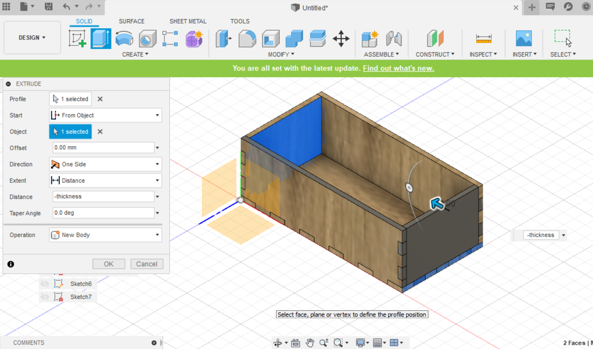
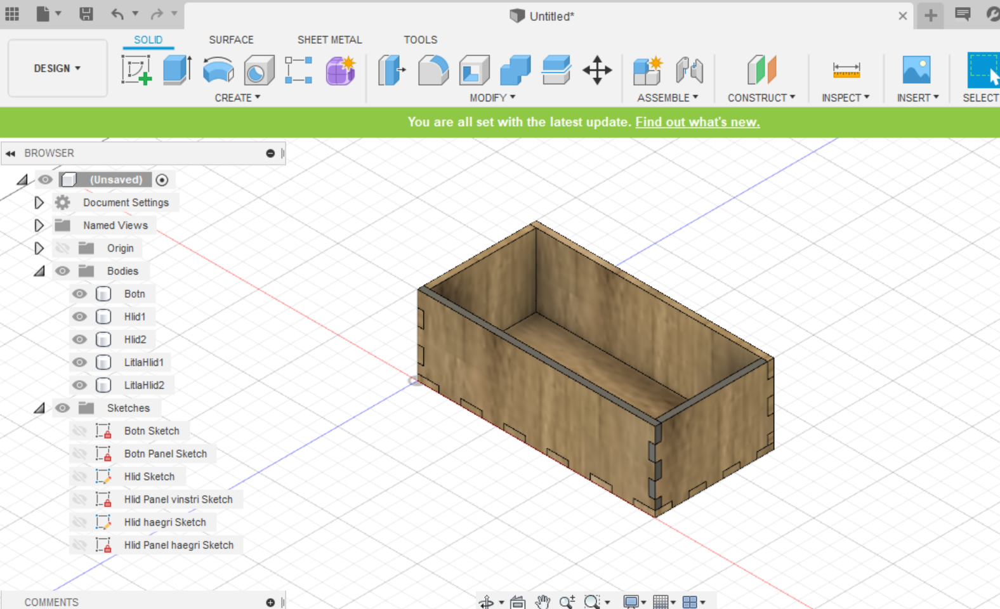
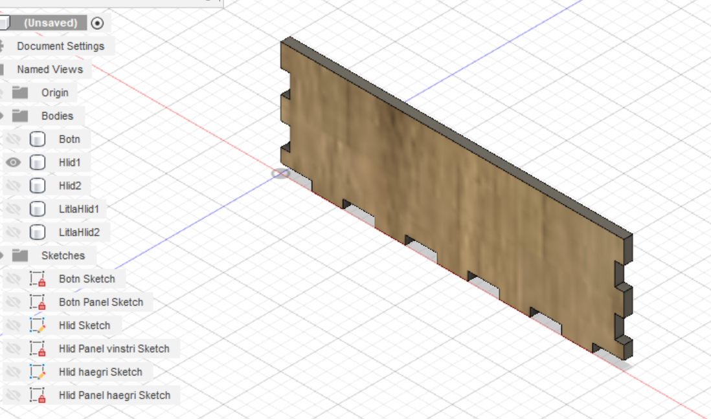

2. Computer-aided design and cutting
Preparation
Assignment 2 is to use a CAD software to build a parametric design of a pressfit construction kit, then cut the design with a laser cutter and document the process and upload our design files. I started by downloading Fusion 360 but I have never used it before so I had to watch some vidoes to be able to make my design on it. I brainstormed some ideas for my design and came up with a design for a jewelry stand but had trouble using parameters and making a beautiful design so I made a design for a little box that I am going to use for my jewelry.
Here is my first design that I failed to laser cut so I scratched it because I also thought it was ugly and I wouldn't use it and I wanted to make something practical.
Here is my second design but I didn't use parameters which was the assignment so I then made a third design that was a small box.
Making the design
I watched videos on how to make a design by using parameters in Fusion 360. I started by making the parameters.
Next I created a sketch and did the bottom on my box.
There has to be panels on the borders to make the sides all fit together. I first put two rectangles on the side that is the length of my parameter lfingersw. Then I extrude the second rectangle with the parameter -thickness. Next we make a rectangular pattern from the create bar to make all the panels.
I made a new sketch and did the side of the box.
I next pressed combine in modify and cut both sides so they fit.
We make the panels the same way I explained before
Then we make the other side by choosing the object we want to duplicate and choose extrude then from object and choose the side we want the new object to go. Next we put panels on the bottom.
Now the box is ready and the only thing left is to laser cut it.
 
Laser cutting
The next and final step is to laser cut the design.
Workload
4.february - 3 hours downloading Fusion, watching videos and learning how to make the design.
5.february - 2 hours laser cutting my design at the university but the laser wouldn't cut through the material.
6.february - 4 hours making a new and better design in Fusion after yesterdays cutting failed. Updated my website and put the project on it.
8.february - 1 hour at FabLab laser cutting my design.
10.february - 2 hours made an yet another new design that was parametric and put it on my website.
Links
https://vimeopro.com/academany/fab-2019/video/314594035
https://vimeopro.com/academany/fab-2019/video/315759994
http://archive.fabacademy.org/archives/2016/doc/laser-cutting-milan.html
https://www.youtube.com/watch?v=wdI86Q3ukFc
https://www.google.com/search?q=html+put+text+in+middle+of+page&oq=html+put+text+in+mi&aqs=chrome.1.69i57j0l7.7934j0j7&sourceid=chrome&ie=UTF-8
https://www.youtube.com/watch?v=9U2JPfkQpsE